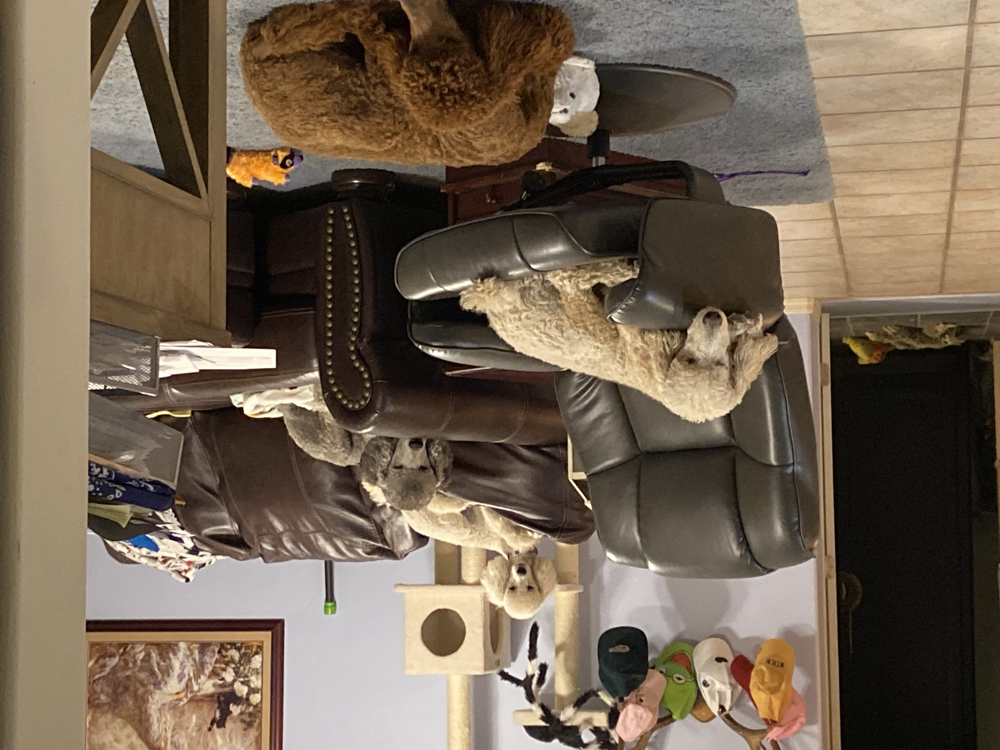
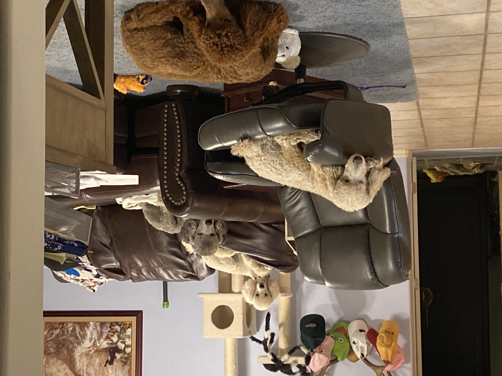
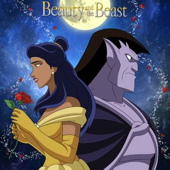
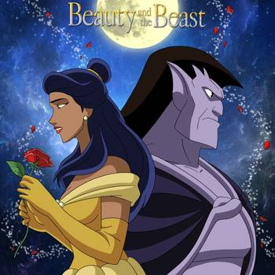

Erika Lee Sanders
Student of coding, design and game development/design..
my Facebook page
Student of coding, design and game development/design..
my Facebook page• I am originally from Washington state, Renton/ Maple Valley , but have lived in Arizona since winter of 2007. • I live with my mom, and we have 5 dogs and 3 cats. The youngest dog is an Anatolian Sheppard boy named Storm, next in age is a Siamese named Mercury, then comes two poodles named Petty and Stevie, then Miniature Poodle Girl( my baby) Rogue, two bangle boys named Thor and Apollo( these three are approximately the same age alongside Remy), then standard poodles Remy and Marvie… Fox TVs 911 and 911 Lone Star…and Paramount Plus NCIS Orig., LA, and Hawaii, and Hawaii 50, and 1883, and Yellowstone are my most favorite tv shows(currently).
| The years and or timeframe. The position and events. | |
|---|---|
| 1985 - 2002(grade 12) | Thoma School District |
| summer 2002-spring 2005 | Bellview CC |
| late winter 2004/early spring 2005 - summer 2012 | Legg lengthening surgury(in order to loose a 4 inch platform from one legg) |
| spring 2007 - summer2013 | Rio Solado, CGCC |
| summer 2013-2022 | lisenced life and health insuranceagent |
| summer 1995-2022 | Personal assisatant to Sandra "My mom" Sanders alisenced life and health insuranceagent |
| 2021- | Web Development and design and Game design and development |
 ,
,
 

 

What is my favorite game of all time and why? My favorite game of all time, does legos both physical and video count? Lego sets because they are like braiding and crocheting it is a solo activity and play as you build..Disney, Harry Potter, Marvel, and DC, and seasonal… This is the game that I would love to create and own/ my dream project… My Game: Small World; Disney, Marvel and DC I would love to create more interactive story Building and Collecting games, Like Pokémon and sky landers, but using Disney, Marvel and DC comics characters and background/ environments. In combination with general real world history, and events that gave/give shape to every thing( 9-11-2001, WW2) and the building blocks of education in a world collecting and building game that uses both physical and digital platforms…In other words to create a game that is all around educational collectable buildable and timeless and age none restrictive…. a) What option did you pick? I chose a combination of challenges 3: when I find you, and 4: pick it up, and 2; it is mine. b) What is the theme and goal of your idea? Can my game have more than one theme? In that it is collectable as you acquire land, characters, stories and knowledge( history, math, geography and cultural understanding) and levels as one plays. c) What format is this game? (e.g., board game, video game, etc.) The easiest way to play is digital, physically it is akin to trading card games but with books and action figures( that are the characters in the books) instead of cards and Monopoly/ Life where in the money is fact cards, figurines(Babies), books, and fact sheets and building sets(Legos). e) Identify the avatars/players. (How are players represented? Are they?) when it comes to the physical the player is their own avatar, in the digital version they start out as either the main character of their first story/book or a digitized self-portrait with wardrobe changes with the seasons region locked (and if possible time zone oriented clock) and achievements. The physical game board is a puzzle map of the location indicated in the story(s), such as France for Beauty and the Beast, the Hunchback of Notre Dame and Ratatouille with real world fact/ guide books included. The buildings are Lego play houses/castles and vehicles( with size appropriate figures) for board game play. There will be a solo non chess like play in that the human characters are 12 inch clothing changeable (per the story/script which is attached in trading card form)babies and modern/film release dated cloths sold with(and fact card included) while the animals such as the Dalmatians or the Oristocats or Abu and Baloo come as 24 inch and under(depending on indicated age, Lion King) possible dolls. The conflict between players in the game play, or how the players interact with each others is that: in the physical version trade and help build/collect/ advance or to go it alone that is the question. In other words players treat the game as a classroom or a community/neighborhood. In the digital version players are to share the wealth and communicate in order to make friends and time differential ( the leading conflict of Farmville, Disney Kingdoms, and Ever Merge and the like).. g) Who is the audience for this game? any one over 3 who likes animals, Universal studios films(strictly PG14 and calmer ), or the classics of literature, Disney, Marvel and DC, and comics, and facts/learning and real world/global history, and events that gave/give shape to every thing, and seeing how they combine into one great big narrative of life.